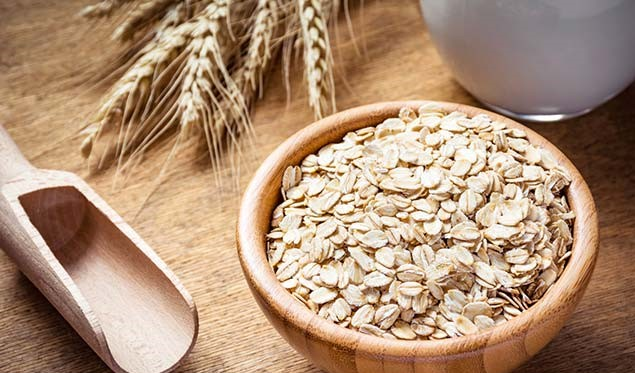

Looking to shed some extra kilos without compromising on those yummy treats? Here are some scrumptious oats recipes for weight loss that would help you sail through!

The quintessential breakfast option, porridge is an easy, quick and fulfilling dish that is packed with multiple nutrients. Here is an oats porridge recipe with double the health benefits, delicious than ever and just too easy-to-prepare. Packed with oats, flaxseeds, sesame seeds, raisins, apple and cinnamon, this would be your go-to dish to kick-start the day on a healthy note.
Comfort food at its best, khichdi is a whole meal in itself that is feather-light on the stomach yet packed with all things essential. Easy, quick yet super delicious, here is an oats khichdi recipe packed with nutritious moong dal and oats cooked with spices and veggies. It is a super light meal that is easy-to-digest and perfect to shed those unwanted kilos.
As the name itself suggests, this idli recipe made with oats, urad dal, chana dal, curd, carrot and spices is the perfect lunch option to relish. Since it is low on calories, it is an ideal option for those looking to lose weight. This oats recipe for weight loss is a great balance of taste and health.
A sweet treat that doesn't add up to your calorie count! Oats and yogurt porridge parfait is a great breakfast option to start the day with. Packed with highly nutritive ingredients like oats, milk and pistachios, this is a quick, easy and wholesome meal to prepare at home. A five-ingredient recipe to prepare within a few minutes!
Do you also feel those hunger pangs in the afternoon when your energy seems to be wearing out? High-five! This energy bite packed with nutritious ingredients such as walnuts, berries and oats is exactly what we need during those vulnerable hours. Made with whole wheat, walnuts, oatmeal, coconut and blueberries, these delicious cookies would do the satiating job without adding up on the weight.